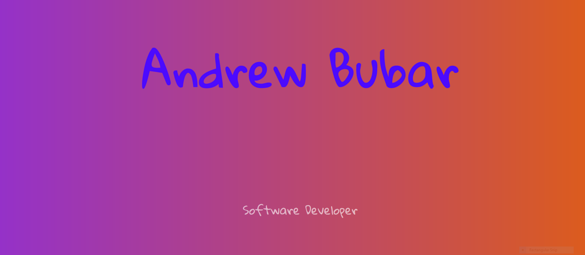

Portfolio
What I have done
The Arrive Alive Competition
 While I was into Game Development,
I would looking for a competition for a good reason and motivation to have a project.
Sadly there aren’t many Game development competitions in Maine.
So when I heard of the Arrive Alive competition,
I knew I should at least try.
It looked like fun to spend only a month on a single project,
and to have it completely done.
Everything (except for the music and sound effects) was created and developed by me.
For my efforts I received third place out of hundreds of various types of submissions.
While I was into Game Development,
I would looking for a competition for a good reason and motivation to have a project.
Sadly there aren’t many Game development competitions in Maine.
So when I heard of the Arrive Alive competition,
I knew I should at least try.
It looked like fun to spend only a month on a single project,
and to have it completely done.
Everything (except for the music and sound effects) was created and developed by me.
For my efforts I received third place out of hundreds of various types of submissions.
This Website
 The website you are currently on was fully Developed in HTML 5, CSS, and JavaScript by myself. While during my education I spent about a week in the field. I only recently started spending more time and taking it more seriously. And this site is the result of that.